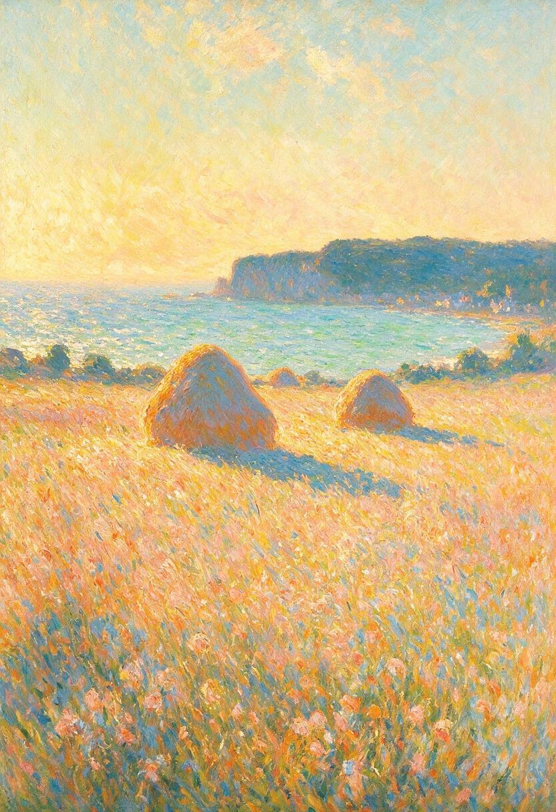
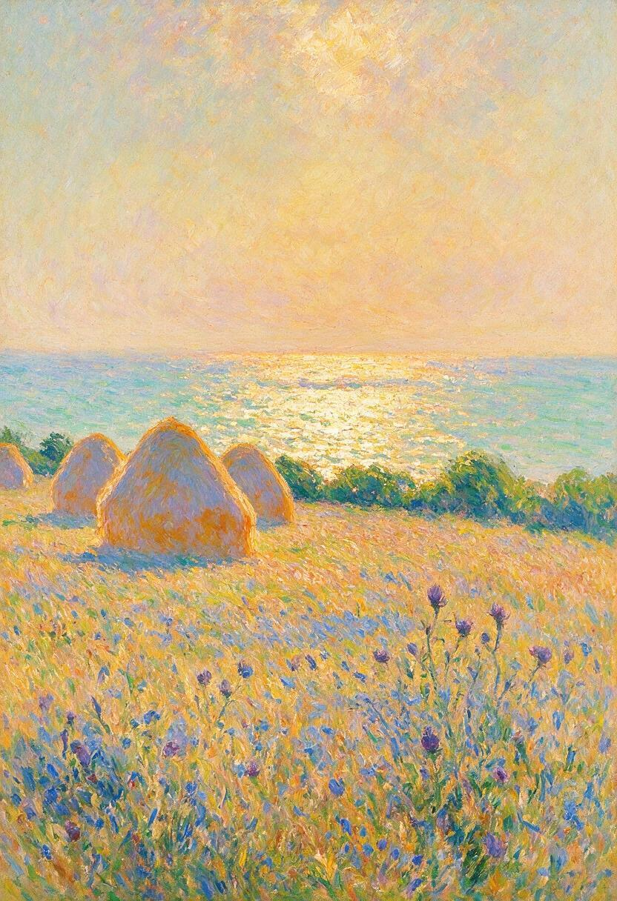

Golden Hour Haystacks
Captures the incandescent yellow-gold illumination of late afternoon. High contrast between the sunlit crowns of the haystacks and the deep lavender ground shadows.
Capturing transient open-air sunlight, coastal cliffs, and water dynamics through unmixed, directional brushstrokes where optical color synthesis occurs in the viewer's visual cortex.

Rooted in Claude Monet's Meules series, this study examines how neural diffusion models render the optical collision between late-afternoon golden warmth and cool marine shadows. Instead of blending pigments smoothly on a palette, unmixed strokes of warm cadmium orange and cool cobalt violet are placed in close proximity.
The vibrating atmosphere is created by light quantization: the eye fuses separate dabs of paint at distance, reproducing the genuine sensation of low-angle coastal sun reflecting off sea spray and straw.
Evaluating variations in stroke density, horizon shimmer, and color vibration.

Captures the incandescent yellow-gold illumination of late afternoon. High contrast between the sunlit crowns of the haystacks and the deep lavender ground shadows.

An exploration of diffused oceanic mist where the sea and sky dissolve into shimmering cyan, violet, and soft peach brushwork.
Desi's initial algorithmic exploration generated 1,000+ deterministic SVG ellipse and line elements via Python to mimic discrete brushstrokes.
As Desi observed, procedural vector math produces clean geometric approximations, but neural diffusion generates the physical impasto depth, fluid edge degradation, and organic vibration that characterize true impressionist oil painting. Both artifacts are preserved together in this pavilion.